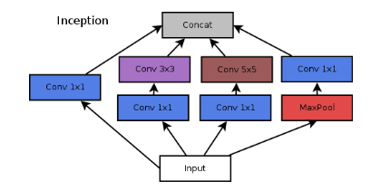
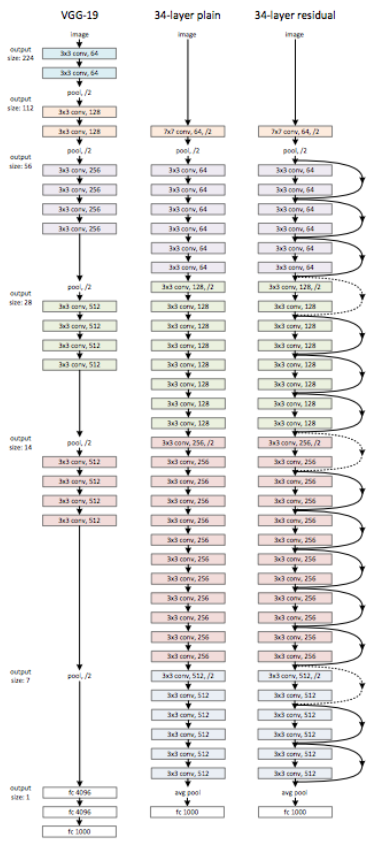
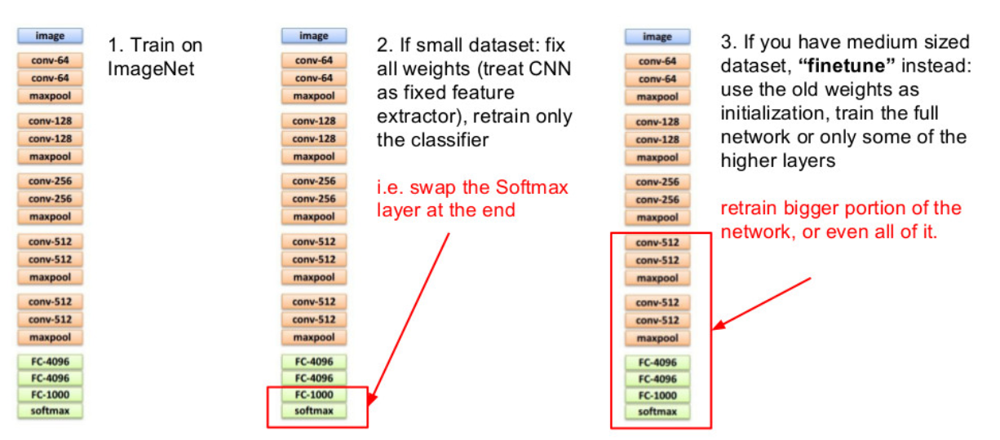
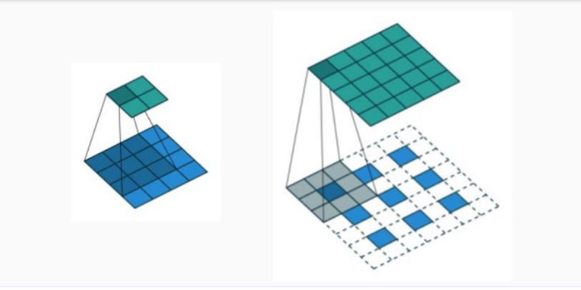

Convolutional neural networks
CNN are Neural networks with some layers that apply a Convolution to the input. Not like classical filters like Image filters , in CNN the value of the filters are not pre-computed but learned during the backpropagation process. Each convolutional layer has the following parameters:
- Kernel size: the dimensions of the filter
- Stride: the movement of the filter
- Padding: the artificial enlargement of the input in order to compute the convolution on borders.
- Depth: number of different kernel to sytesize.
The output is given by: where:
- W is the dimension of the input
- P is the padding size
- K is the kernel size
- S is the stride The dimension of the kernel is going to be where N and M are the dimensions of the kernel given in input and D is the depth of the kernel.
Pooling
Is common to see some convolution layers alternate with some pooling layers. A pooling layer takes either the maximum, the minimum or the mean value of its receptive field.
Receptive field
The receptive field of a neuron is the dimension fo the input needed to produce an output of dimension 1 (without padding). A neuron can see only his receptive field.
Inception module
At each step of a CNN we must choose if to apply a convolution, a pooling operation, etc. But with an inception module, we can concatenate this operation in order to get the best from each of those operations. 
Depthwise separable convolutions
Convolutions are, often, 3D and if we want to apply a nxn convolution to an input channel of dimension i and output o we are going to have parameters. If, instead, we compute i different convolution of size nxn and then apply a 1x1xi convolution o times, we're going to have parameters => much less.
Residual learning
In order to solve the proble of low learning in the deeper layers, we can add a "residual shortcut" that repeat the input every 2–3 layers. 
Transfering learning
We can reuse some of the neurons of an already-trained network in order to save time in the training procedure. 
Transpose convolutions
They are convolutions with sparser values. They enlarge the input. They can be computed by transposing the matrix of the original convolution 